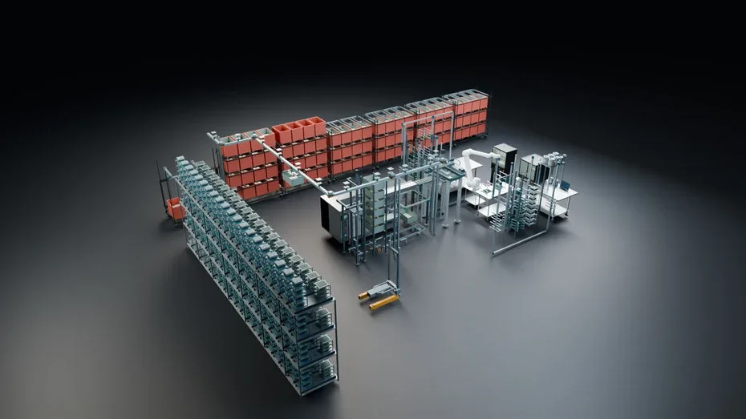
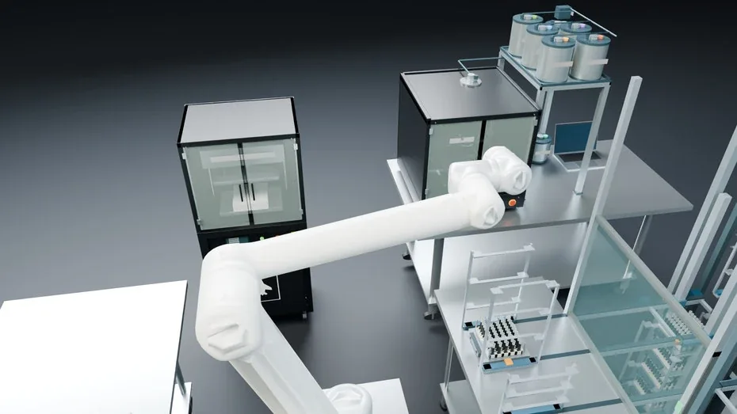
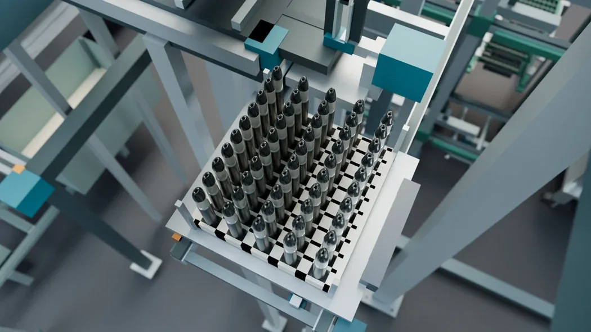

Manufacturing & robotics
The cylinder line
A machine fills cylinders in a tray. A bagger needs them one at a time. I built a model to work out what has to happen in between.

Follow the tray
I start by following one tray. The arm has to reach it at the filling station, present it for capping and clear the station for the next cycle. The receiver needs a repeatable tray position before it can pick a single cylinder.
The layout puts two different motions side by side. The arm can change a tray’s orientation. A Cartesian gantry moves along straight axes to send the individual pieces toward the bagger.

Move the tray
One arm serves the fill and cap stations. Its approach and exit need as much room as the tray itself.

Pick the piece
A fixed grid gives the gantry a pickup sequence. Once the last position is empty, the tray can leave.
What I’m testing
I use the model to inspect reach, the return path for an empty tray, and the space someone needs to clear a stop. The sequence is a proposed installation. Cycle times, gripping reliability and recovery still need a physical trial.
Explore the 3D engineering tour